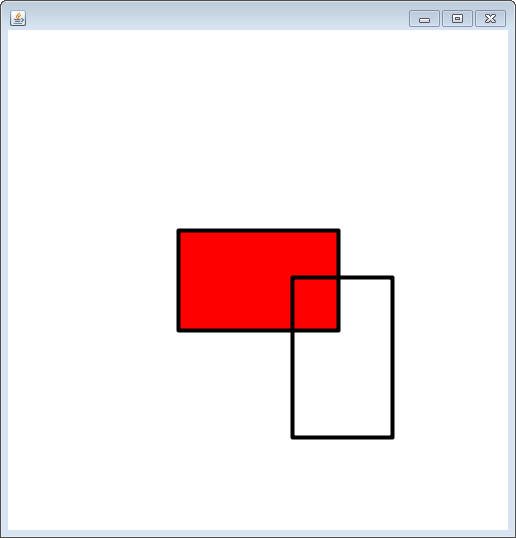
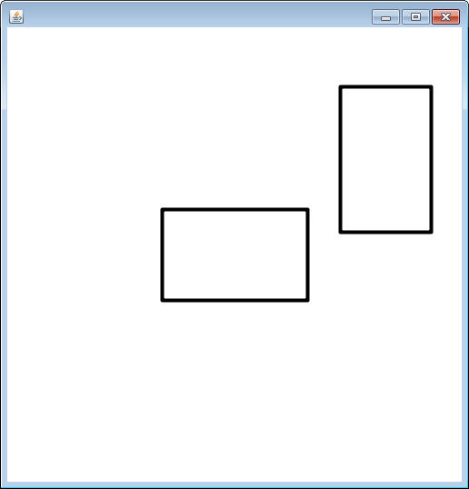

Start by creating a new project named JumpMan. We will most likely return to this project later, so it does not necessarily have to be in the Unit 5 folder.
Create a class named BoundingBox, which will be responsible for representing a rectangle that surrounds an object.
Add ints for the x,y,width, and height of the box.
The constructor should take in four ints and apply them to the appropriate instance fields
Add the basic accessor methods: getX(), getY(), getWidth(), and getHeight()
The overlaps method:
The most important thing that a BoundingBox is going to be used for is to tell if it overlaps another BoundingBox object. Add the following method header.
public boolean overlaps(BoundingBox other)
The idea is to use the x,y,width and height of both 'this' box and the other box to see if they overlap adn return true if they do. This can be tricky to do, unless you look at it a specific way.
Instead of thinking "What is true when two boxes
overlap?", you should think "What is true when they are NOT overlapping?".
If two boxes are NOT overlapping, at least one of four things must be true:
1) The other box is completely to the right of
this box (other's left edge is greater than this' right edge)
2) The other box is completely to the left of
this box (other's right edge is less than this' left edge)
3) The other box is completely above this box
(other's bottom edge is less than this' top edge)
4) The other box is completely below this box
(other's top edge is greater than this' bottom edge)
BE CAREFUL: It is never just comparing an x and another x. In order to be completely to the right, an x must be greater than an x+width
Your method should look for any of these cases and return false. If none of those return, then the boxes must be overlapping.
Copy and paste the following runner. Move the mouse until the two boxes overlap. When they do, the center square should turn red. Move the mouse all around to make sure that it only turns red when the boxes are overlapping.


import sacco.*;
public class BoundingBoxTester extends SaccoObject
{
private int x,y;
private BoundingBox stationary, drag;
public BoundingBoxTester()
{
x = Integer.MAX_VALUE;
y = Integer.MAX_VALUE;
stationary = new BoundingBox(170,200,160,100);
}
public void paintWindow(PaintBrush brush)
{
if(drag != null && drag.overlaps(stationary))
{
brush.setColor("RED");
brush.fillRectangle(170,200,160,100);
}
brush.setThickness(4);
brush.setColor("black");
brush.drawRectangle(170,200,160,100);
brush.drawRectangle(x-50,y-80,100,160);
}
public void onMouseMove(MouseEvent m)
{
x=m.getX();
y=m.getY();
drag = new BoundingBox(x-50,y-80,100,160);
}
public static void main()
{
BoundingBoxTester b = new BoundingBoxTester();
b.showWindow();
}
} |